Literature survey
During the past few decades, Sri Lanka has gotten the increased attention of travelers worldwide as a travel destination. Proving this, Sri Lanka owns several global endorsements as one of the best places to travel during the past few years. Selecting as one of the best places to travel from UAE for the year 2020 [1], CNN travel’s best places to visit in 2020 [2], best warm-weather destination to visit in 2019 by USA Today [3], and best travel destination for the year 2019 by Lonely Planet [4] are some of the proofs for the global praise taken by Sri Lanka as a tourist location. Build tourism as an industry within Sri Lanka caused several factors that could be seen in the country. For example, attractive natural sceneries, having multiple environmental diversities within a small area, cultural diversity, and historical elegance of Sri Lanka can be brought to the table. These factors have been caused Sri Lanka to be famous among international travelers as an attractive travel destination. When considering the recent trends of the travelers mostly travel around Sri Lanka, it can be seen that travelers tend to arrange their trips on their own, not relying on the Tourists guides and agencies. The advancement of technology has been most affected these trends. More advanced mobile networking technologies, satellite and GPS technologies, and many more technical advancements can be taken as examples. The Smart Guide mobile application is proposed to service the tourism industry in Sri Lanka with the new technology. The mobile application and the system comes up with following features.
- o Recommend locations to the travelers
- o Provide information about locations
- o Let travelers suggest alternative nearby locations to the system and other travelers get informed about those locations
- o Recommend transportation methods and routes to the travelers
- o Arrange transportations as per traveler’s request
- o Let travelers suggest alternative routes to the system and other travelers get informed about those routes
- o According to the traveler’s preference, trips are arranged considering
- o Best travel locations
- o Best traveling routes and transportation methods
- o Availability of supportive services
- o Let user customize and manage the trip via the system
- o During the trip, the traveler is given information about the supportive service providers who provide
- o Accommodation/Resting
- o Transportation
- o Let service providers register into the system
- o Inform service providers when travelers require their service
- o Update service providers with timely trends and latest tourism-related information
Research Gap
With the literature study, it can be seen that existing systems in Sri Lanka that are available to assists travelers are less efficient to meet the requirement of the modern traveling trends. Most of the systems are only providing the list of some travel locations and some details of the locations. It cannot find any system that assists the travelers considering the traveler’s preference or provides a customized service. With the global trends and influence of information technology in the tourism industry, in order to attract a bigger customer base to the Sri Lankan tourism industry, it is obvious that Sri Lanka must go forward with the modern trends in the industry and must facilitate the travelers with the most efficient ways.
As it can see that influence of the Artificial Intelligence and other expert systems in the tourism industry, it is more convenient to apply those methodologies in the local systems to provide a delightful service to the international tourist community. In order to align Sri Lankan tourism industry with the emerging trends in the global context, it is important to bring up the technological enhancements into the industry, where the travel service providers are able to provide their services to the travelers efficiently and effectively. When tourists come to travel in Sri Lanka, they must have the ability to approach required services in order to get the best travel experience. By studying the existing systems that are available for the tourism industry, it is proven that there is no existing system or platform in Sri Lanka that provides a customized service to independent travelers which focuses on their individual preferences as well as real-time conditions when it comes to trip planning and guiding. Implementing such a system would address the pain point of the travelers who are willing to plan their trip efficiently and optimistically.
Research Problem
In a trip, there are two most important parts, which are the locations and the journey towards the locations. In this case, tourists make sure that they select the most suitable locations on their preference in order to plan their trip. It will bring them the most unforgettable experiences during the trip they go on within the limited period that they have allocated. As the world’s best tourists destination, Sri Lanka must concern with tourists' interests and should provide required solutions for the tourists who travel in Sri Lanka in order to give the best travel experience within the country.
The existing solutions do not consider the preferences of the tourist and filter out the best suiting locations for each tourist. This feature may allow tourists to easily select the locations that suit their preferences and various other factors such as age, religion, etc. Therefore, it is obvious that the existing solutions given for the tourism industry in Sri Lanka do not address the requirements in the industry in order to align with the global trends. When it comes to the role of these systems in providing information about the transportation methods to the tourists, it could be seen most of the systems do not aware of this concern and most of the systems do not consider the user’s preference when providing the assistance to them.
When considering the travel service providers’ situation, there is a requirement of enhancing the travel services in Sri Lanka with the collaboration of andvanced technology, it requires a platform for the travel service providers where they can maintain their presence, so that the travelers get aware of the available travel services in Sri Lanka. At the same platform travlers could be able to interact with the service providers and connect with the service providers once they require their services. Service providers must get the ability to hear to the travelers when the travelers require their service. Apart from that service providers could be able to get information related to the travelers behaviors in different seasons and different situations then they are able to take the right decision for their business in a certain situation.
Apart from that, the existing solutions do not consider the preferences of the tourist and filter out the best trip plans for them. Most travelers have to reach a travel agency or a travel guide to get the guidance to manage their trips. As discussed in the literature, according to the current global trends in the tourism industry, travelers more tend to manage their trips on their own, rather than getting assistance from another party. Modern technologies come to the stage in this case, to assist the travelers with various technological features. In order to get aligned with the current global trends in the tourism industry, Sri Lanka needs to come up with a solution that allows the tourists to manage their trips within Sri Lanka on their own. It is obvious that the existing solutions given for the tourism industry in Sri Lanka do not address the requirements in the industry in order to align with the global trends. It is required to come up with a solution to address those requirements which will ultimately aid the tourism industry in Sri Lanka to serve the worldwide travelers to get a better travel experience in Sri Lanka.
Main Objectives
Various inputs are taken from the user such as age, gender, region, religion, and other various preferences, and an AI model is fed with the collected information. The AI model predicts and outputs the user preferred location types by analyzing the given information.
Various inputs are taken from the user such as age, gender, region, religion, and other various preferences, and an AI model is fed with the collected information. The AI model predicts and outputs the user preferred transportation methods to travel from one location to another, by analyzing the given information.
It is required to make service provides informed about the statistics of the tourist arrival in the future time periods in order to take their business decisions with more confidence. Other than many of other industries, tourism industry mostly rely on the dynemic data as behavior of the tourists is sensitive to the most dynemic factors. Which are social factors, political situation of the country, climatic changes, economic behaviors and many more. Therefore, an Artificial Intelligent model is expected to develop in order to predict the behavior of the tourist arrival in the upcoming seasons and let service providers get informed about the information gained, which will be a huge support to make their crutial business decisions.
The proposed system allows tourists to find suitable service providers during their journey. In this case, service providers must have the chance to maintain their online presense in the system in order to get the attention of the travelers. Therefore, the proposed system provides a platform for the service providers to maintain their business profiles in the system as they want by having their own profile. Apart form that the system will allow the service providers to directly contact with the travelers to share their information.
Travelers always want to make sure that they are spending their allocated time for the trip in the most efficient way, in order to get the most valuable experiences during the trip. In this case, trip planning is the most important thing to focus on. This study aims to develop a platform for travelers to assist with planning and managing their trips in the most productive way by considering the various factors that affect planning the trip.
Specific objectives
A web application is proposed to develop for the system admins, which will allow them to manage the information related to the travel assistance and manage the interaction between travelers and service providers
A mobile application is developed for the users to enter their data, select the preferred locations, transportation methods, trip types, contact with travel service providers when required and manage the trip in the most convenient way. Additionally, the mobile application will allow them to add new locations and transportation methods to the system that they suggest to other travelers.
A web application will be developed for the service providers, for the purpose of maintaining their online presence in the system. service providers are able to manage their business profile, receive feedback and messages from the travelers and get information about the tourist arrival from the system.
Methodology
In accordance with the above discussion, it has been proven the importance of implementing a system to assist the travelers who travel in Sri Lanka, in order to get a better travel experience. In accordance with that, it has been figured out several objectives of the proposed system. The proposed system is developed with the aim of serving the tourism sector in Sri Lanka to align with the recent trends in the global tourism industry by accomplishing the following goals.The proposed system work as an assistant to the travelers by suggesting the most suitable locations for each traveler by analyzing their characteristics and preferences. For this, an Artificial Intelligent model is proposed to develop for the system. In this case, it is not much efficient and too costly to develop an AI model to predict the exact set of locations that the user prefers to travel to. Because there can be found a large number of travel locations that various types of travelers may prefer to travel to. Therefore, the travel locations that could find in Sri Lanka are categorized into various categories and the AI model is trained to predict the user preferred location type or types instead of the exact set of locations. This is allowed the AI model to provide its predictions efficiently and effectively.
In this case, it can be used either Clustering models or Classification models to predict the user preferred location types. As locations will be categorized into the following categories, the AI model is supposed to predict the user preferred location types out of them.
(Heritage, Beachside, Scenic, Religious, Camping & hiking, Nature, Village life, Road trip)
The proposed system work as an assistant to the travelers by suggesting the most suitable transportation method for each traveler by analyzing their characteristics and preferences. For this, an Artificial Intelligent model is proposed to develop for the system. The AI model is trained to predict the user preferred transportation method or methods. In this case, it can be used either Clustering models or Classification models to predict the user preferred transportation methods. As transportation methods will be categorized into the following categories, the AI model is supposed to predict the user preferred transportation methods out of them.
(Bus, Train, Bike, Hired cab, Car (Self-driving), 4x4 off-road, Walking, Cycling)
Apart from creating trip plans by considering the user inputs, the proposed system helps the users with suggesting user-preferred trip types as well. For this, the system analyzes the various user information and comes up with predictions for user preferred trip type/s. Here, an Artificial Intelligent model is proposed to predict the user preferred trip types. We have used Classification models to predict the user preferred trip types. As trips will be categorized into the following categories, the AI model is supposed to predict the user preferred trip types out of them.
(City tour, Village tour, Road trip, Camping and hiking, Beachside, Pilgrimage)
displays the landing screen of the user’s mobile application where the user opens the application for the first time. As the first step, it takes the logging information from the user. The user has to insert a valid email and password, which is used to authenticate the user account in the future. By clicking on the Next button, the user redirects to the next screens where the user’s details are collected.
| 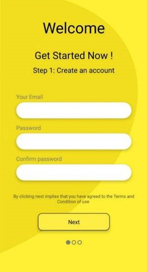 | 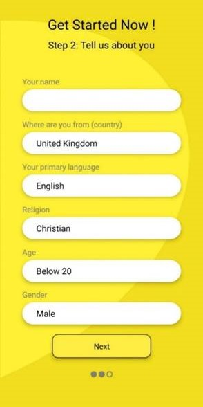 | 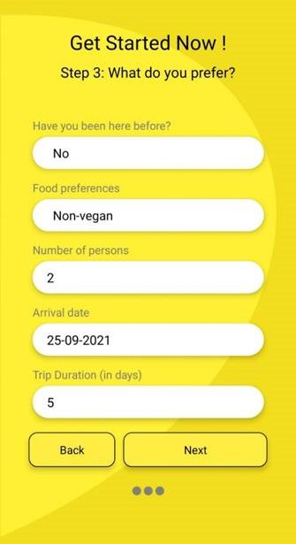 |
This is the second step of the user information collection process. Here it is collected the user name, user’s country, language, religion, age, and gender. With the click of the Next button, the user will be redirected to the third step of the user sign-up process.
collects information such as has user traveled to Sri Lanka before, food preference, number of people traveling with the user, arrival date, and the duration. In the AI model training process, it could identify these properties as the most accurate features to predict the user preferred location types. Therefore, these properties are extracted from the users in the signup process.
the screen where user selects the beginning point of the trip. It is used as a input to create to trip plan. displays the view where the user can select the endpoint or the destination of the trip. This is also used as input from the user to create the trip plan.
 |
 |
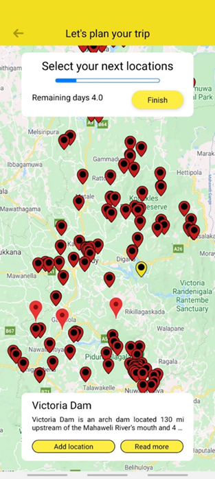 | 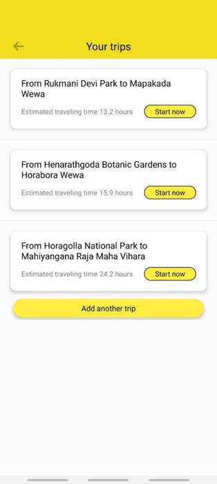 |
the user can select multiple locations that need to be included in the trip plan. These sets of locations are used altogether to plan the set of trips. Once the user is done with selecting the preferred locations and preferred transportation types, then the system generates all the possible trips for the user according to the user's preference. Figure 3.12 displays the set of trip plans generated by the system. From there, the user can select one to go on the journey around Sri Lanka.
| 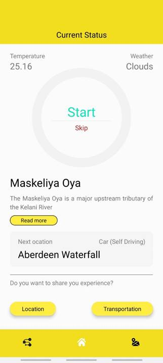 | 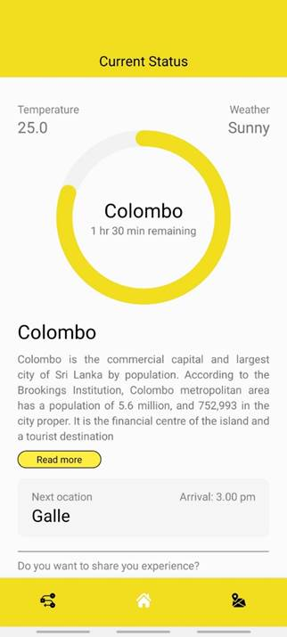 | 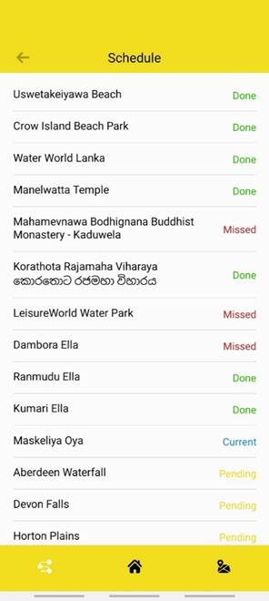 | 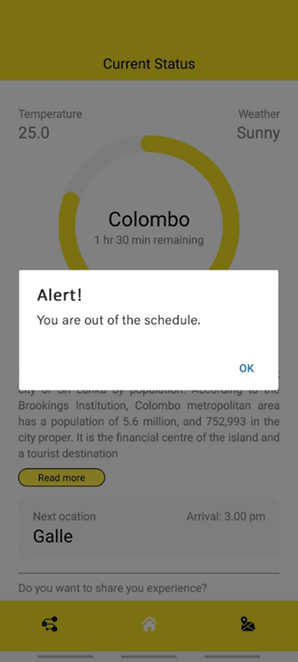 |
Once the user is selected one of the trips from the listed trip plans, the user can successfully start the trip along with the assistance of the system. Next, the next location that the user needs to reach according to the trip plan. Here, it includes the details of the location, transportation method and its details, and other details like weather information. Weather details that are displayed here are extracted from the Open Weather Map . Users can either proceed with the location or skip the location too.
Once the user starts with a location, the application provides the current status of the user. The image displays the current status of the user including remaining time to spend in the current location, next destination, and various other information.activity history of the user. Here it displays the user activity in each planned location, whether the user traveled in the location or missed the location, what is the current location and what are the pending locations. This helps the user to get an overall idea of the trip.
| 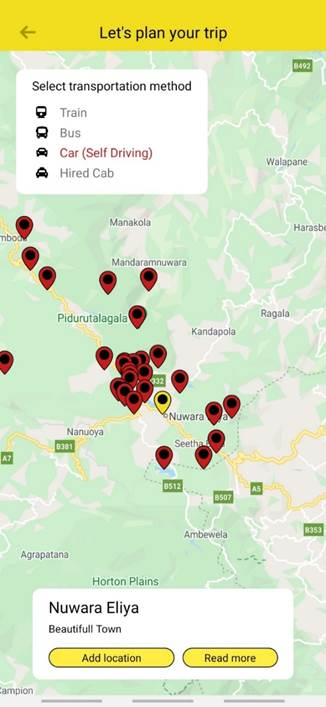 | 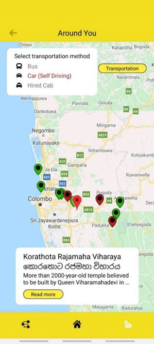 | 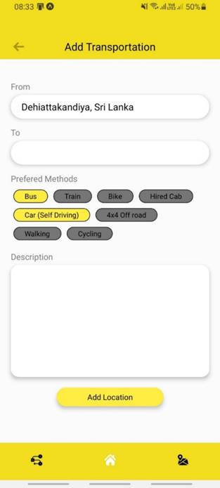 |
Demonstrates the view to be displayed to the user when user required to view the transportation services available around the user. The available transportation services are displayed in a map view where user can easily select a nearby transportation service provider.
when user wants to add new transportation method to the system. Here, user is required to insert the details of the transportation method which are, location-from, location-to, available transportation methods and the description. User added transportation methods can be separately identified by the system
The dashboard of the system admin of the developed system. System admin as capable of studying the forecasted information about the tourist arrival to Sri Lanka and send required information to the service providers.
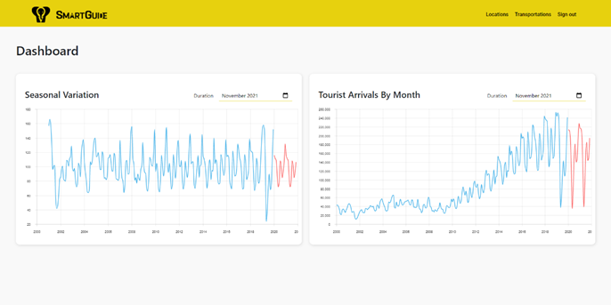The sign up process of the service provider. A travel service provider can sign up to the system by inserting the business name, owner’s name, service type, email and the password.
| 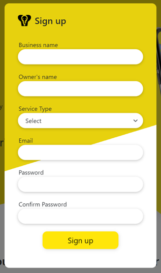 | 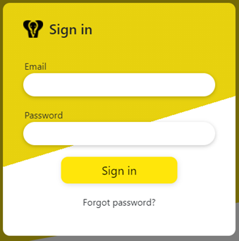 |
A signed service provider can log into the system by inserting the email and password, as displayed in the Once the service provider is logged into the system, service provider’s dashboard is displayed is describes. Service provider can navigate to all the features available in the system via the dashboard.

Messages and notifications received by the service provider are displayed in the Messages and notification section, which is demonstrated. Service provider is displayed the messages received from the travelers and notifications received from the system.
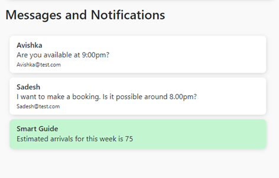Service provider is able to update the contact information of the business in order to keep contact details updated. Contact information of the business can update using the contact details updating form which is displayed in the.
 |
 |
Service provider is able to update the profile information of the business in order to keep the information of the business updated. Update profile form allows the service provider to update profile information displayed. Here service provider is allowed to update the business name, Owner’s name, service type and the description.
Technologies used
Visual studio code is a free source-code editor made by Microsoft for Windows, features include support for debugging, syntax highlighting, intelligent code completion, snippets, code refactoring, and embedded Git.
MongoDB is a cross-platform document-oriented database program. Classified as a NoSQL database program, MongoDB uses JSON-like documents with optional schemas.
Python is a general-purpose programming language with a vast ecosystem of libraries and tools for executing a wide variety of tasks or exposing a range of services. As an interpreted language, Python code is executed at runtime using a pre-compiled Python interpreter with a specific version and relevant environmental variables.
FastAPI is a modern, fast (high-performance), web framework for building APIs with Python 3.6+ based on standard Python type hints. FastAPI validates the data type even in nested JSON requests and it’s easy to do exception handling. It supports async code as well, using the async/await Python keywords. FastAPI is commonly used for projects
React native is JavaScript mobile development framework, allows creating native apps for Android and iOS using React. React Native combines the best parts of native development with React, a best-in-class JavaScript library for building user interfaces. It’s written in JavaScript—rendered with native code.
ReactJS is an open-source JavaScript library for building user interfaces or UI components. Its declarative views make the code more predictable and easier to debug. As React JS ai component based, it allows build encapsulated components that manage their own state, then compose them to make complex UIs. React can also render on the server using Node and power mobile apps using React Native.
Bootstrap is a free front-end framework for faster and easier web development which includes HTML and CSS based design templates.
Bootstrap is a free front-end framework for faster and easier web development which includes HTML and CSS based design templates.
Software infrastructure services is been an essential part of software development and implementation in the modern context. With the latest developments in the software development industry, infrastructure services have come up with several facilities and possibilities that improve the service of the software product. Especially, cloud services play an important role in this case. Cloud services reduce the cost of managing and maintaining IT systems. Rather than purchasing expensive systems and equipment to run the product, costs can be reduced by using the resources of a cloud computing service provider. Cloud services provide other many services as well such as authentication and build tools. Apart from the cloud services, other important infrastructure services are Google APIs and version control services. Google APIs allow software developers to use usually unreachable services such as Google map and Google places, which make the software products reliable to their users. Version controlling services such as Git are very important in a collaborative software development project to carry out each one’s tasks smoothly. Following infrastructure and services are used in this study to get its expected outcomes efficiently and effectively MongoDB cloud